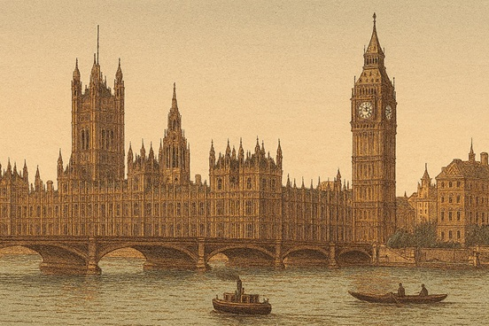

Holts in Parliament

The Holt (or Holte) family produced a number of Members of Parliament over more than six centuries, most commonly representing constituencies in Lancashire and the Midlands. Their roots lie deep within the English landed gentry from the Holts of Stubley and Castleton in Rochdale to the distinguished Holtes of Aston in Warwickshire and their parliamentary careers reflect the political, legal, and social worlds in which these families moved.
This page summarises the key Holt and Holte individuals recorded in the History of Parliament, an authoritative scholarly resource containing detailed biographical, constituency, and contextual studies of every MP across the medieval, early modern, and modern periods.
The entries below are arranged by parliamentary era and include brief notes on family background, dates, constituencies represented, and any particularly interesting aspects of each individual’s career. Where a member is connected to the Lancashire gentry or to the aristocratic Holtes of Aston, this is noted explicitly.
1386–1421 (Richard II → Henry V)
(c.1345–1418), Justice of the Common Pleas and a prominent
parliamentary figure under Richard II.
A Knight of the Shire and senior royal judge, Sir John Holt played a central
role in the politics of the late 14th century. Loyal to Richard II, he was
condemned to death by the “Merciless Parliament” of 1388, though his sentence
was commuted to exile in Ireland. Eventually permitted to return, he died on
his family lands in 1418. His career reflects the turbulence of Richard II’s
reign and the dangers faced by royal servants during the ascendancy of the
Lords Appellant. No direct connection is known to the later Lancashire or
Aston Holts, though his prominence makes him one of the earliest and most
dramatic parliamentary figures bearing the name.
(c. 1420–1458) MP for Hampshire (1449–1450)
Another member of the Hampshire line, Richard was a significant landowner
who held estates in Colrith and Bramdean. His service in Parliament occurred
during the chaotic lead-up to the Wars of the Roses. He was a close associate of
he powerful Bishop of Winchester, William of Wykeham’s successors, which helped
cement his family’s status as regional power brokers.
(d. 1398), MP for Lewes in January 1390.
A Sussex wool merchant active in the Lewes trade routes, Stephen Holt received
a royal licence in 1373 to export wool and later served as tax collector for
Sussex. His background appears commercial rather than landed.
(fl. 1402–1414), MP for Plympton Erle in 1402.
Likely a Devon native, he served as a royal customs controller at Plymouth and
nearby Cornish ports and acted as feoffee for local gentry such as Sir William
Langford. His parliamentary service was unusual for a non‑gentry figure in
Devon.
(died c. 1418) MP for Wycombe (1391)
Another early administrative figure, John Holt was a lawyer and a landowner in
Northamptonshire and Buckinghamshire. He was likely related to the Sir John Holt who
was a Justice of the Common Pleas. His life was marked by the volatile politics of
Richard II’s reign; the family suffered forfeitures when Richard II was deposed, though they
eventually regained their status under the Lancastrian kings
(fl. 1386–1399), MP for Canterbury (1377, 1378, and 1386) and Reading (1391).
A lawyer and landholder with property in and around Canterbury, Thomas Holt
represents the emergence of professional men in late medieval borough politics.
He held lands in Kent and married a woman named Joan. His name marks one of the
earliest appearances of the surname in parliamentary records. Thomas Holt was a
lawyer who served various boroughs. He was frequently employed by the Crown as a
commissioner and was involved in the administration of justice in Kent and Berkshire.
His career highlights the family’s early involvement in the legal framework of England.
He practised in the court of common pleas and accumulated property across east Kent. His house was
ransacked during the Peasants’ Revolt of 1381, reflecting his prominence in local affairs.
(fl. 1402–1414), MP for Plympton Erle in 1402.
Likely a Devon native, he served as a royal customs official at Plymouth and
nearby Cornish ports and acted as feoffee for local gentry such as Sir William
Langford. His parliamentary service was unusual for a non‑gentry figure in
Devon. No connections are known to the Lancashire or Aston Holts.
1509–1558 (Tudor Parliaments)
(by 1500–1546), MP for Warwick in 1529.
A member of the Middle Temple and of the Holte family of Aston and Duddeston
in Warwickshire, Thomas Holte combined legal training with landed interests.
He stands at the head of the line that would become the Holte baronets of
Aston Hall, one of the most prominent gentry families in the Midlands. Through
this line, the Holtes were closely connected to county politics and to wider
networks of gentry and aristocracy, including links into Lancashire families
by marriage and patronage. A lawyer by training and a member of the Middle Temple,
Thomas was the crucial link who established the family’s power in the Midlands.
He served as a Justice of the Peace and was a favorite of the Crown, eventually becoming
a member of the Council in the Marches of Wales. He was the one who purchased the
manor of Aston and the Duddeston estate, laying the groundwork for the future Baronets.
(d. 1435/6), MP for Warwickshire in 1414 (Nov.) and 1422.
A younger son of Walter Holt of Aston, he regained the family manor after
disputes and became a King’s esquire under Henry IV. His tenure at Aston
places him firmly within the early lineage of the Holtes of Aston, the family
later famed for Aston Hall and their long-standing county influence.
(fl. 1550s) MP for Preston (1553)
A member of the Lancashire branch
(Stubley/Castleton). He was a Catholic sympathizer during the reign of Mary I,
representing the family’s traditionalist northern roots.
1558–1603 (Elizabethan)
1604–1629 (Jacobean)
(c.1571–1637), MP for Clitheroe (1597), Preston (1604–1611),
and Lancashire (1621–1626).
A prominent lawyer of Gray’s Inn and second son of Robert Holt of Ashworth,
he belonged to the Lancashire Holts of Ashworth, a minor but long‑established
gentry family. He purchased the manor of Bolton and became a leading legal
figure in the Duchy of Lancaster. His speeches in Parliament, especially his
1607 critique of the Anglo‑Scottish Union, were widely circulated. This is the
strongest parliamentary representative of the Lancashire Holts.
(c. 1625–1679) MP for Warwickshire (1661–1679)
A member of the Holte of Aston branch (a junior but wealthier branch of the Lancashire Holts
that moved to Warwickshire), Sir Robert was a staunch Cavalier. He was the grandson of Sir Thomas Holte,
who built Aston Hall. Robert’s career was defined by his loyalty to the Crown during the Civil War
and the Restoration. However, he struggled with massive debts and was famously imprisoned for debt
in the Fleet Prison while still a sitting MP, leading to a landmark constitutional debate
regarding parliamentary privilege and immunity from arrest.
1640–1660 (Civil War & Restoration)
(1649–1722) MP for Warwickshire (1685–1687)
The son of the 2nd Baronet (Robert), Charles was a highly educated man, holding
an MD from Oxford. He was a quintessential Tory and a high churchman who served
during the reign of James II. Unlike some of his descendants, he was known for being
a very active local administrator and a generous patron of the arts and sciences. He
managed to stabilize the family finances after his father’s imprisonment, ensuring
that the Aston Hall estate remained the family's crown jewel.
1660–1715 (Restoration → early Hanoverian)
(1642–1710), MP for Bere Alston in 1679.
Son of Francis Holt, a lawyer and recorder, Sir John became one of the most
respected Lord Chief Justices in English history (1689–1710). Though not
connected to the Lancashire Holts, he belonged to a distinguished
merchant‑lawyer family whose estates centred on Redgrave Hall in Suffolk. His
parliamentary service was brief but active, and he later played a key role in
the constitutional settlement of 1688–89.
(c.1635–1710), MP for Petersfield (1690–1698, 1701, 1702).
Eldest surviving son of John Holt of Portsmouth, he supported the 1688
Revolution and served as militia colonel and deputy‑lieutenant. His speeches
in Parliament focused on militia organisation and the East India Company. His
estates centred on Nurstead House in Hampshire. This Richard represents the
Hampshire branch of the family. He was the son of John Holt and served as a
Member of Parliament across several decades during the late Stuart period. He
was generally aligned with the Whig faction (unlike his Warwickshire cousins).
He was deeply involved in the local governance of Portsmouth and Winchester
and served as a commissioner for the New Forest.
(1647–1713), MP for Lancashire in 1685.
A major figure of the Lancashire Holts, James was the son of Robert Holt of
Stubley Hall and inherited the vast Castleton estate. Educated at Brasenose,
he served on militia and corporation commissions and died “very rich.” His
family had held lands in Rochdale parish since the 14th century, making him
the principal parliamentary representative of the Stubley–Castleton line.
1715–1820 (Georgian)
(?1723–1786), MP for Suffolk (1761–1768).
Great‑nephew of Sir John Holt, he inherited Redgrave Hall and travelled widely
in Europe, reportedly meeting the Jacobite Pretender in Rome. His voting
record was mixed, reflecting shifting Tory and Opposition positions. His
estates remained in Suffolk, with no Lancashire or Aston connections.
(1720–1770) MP for Lichfield (1741–1747)
Sir Lister represented the Aston branch during the mid-18th century. His election for
Lichfield was part of a broader Tory effort to challenge the Whig supremacy under
Robert Walpole. He was known as a "high Tory" and was often associated with Jacobite
sympathizers in the West Midlands, though he remained within the bounds of legal political
opposition. He died without a direct male heir, and the estate eventually passed to his brother Charles.
(c.1721–1782), MP for Warwickshire,
1774–1780.
Second son of Sir Clobery Holte, 4th Baronet, of Aston Hall, and Barbara
Lister, Charles Holte was educated at Magdalen College, Oxford, and succeeded
his brother as 6th Baronet in 1770. The Holtes of Aston had long been among
the leading county gentry, and the family represented Warwickshire in
Parliament for much of the later 17th and 18th centuries. Through marriage and
patronage, the Aston Holtes were connected into wider Midland and, indirectly,
Lancashire gentry networks, making Sir Charles part of a broader landscape of
regional influence. . He was elected during a period of intense local political
competition. While he maintained the family’s Tory traditions, he was generally
considered an independent country gentleman. His death without male issue led to
the extinction of the baronetcy and the eventual dispersal of the great Aston Hall estates.
1820–1868 (Reform era)
1868–present
(1868–1941) MP for Hexham (1907–1918).
A high-profile Liberal MP and shipping magnate. He was the head of the Blue Funnel
Line and represented the family’s transition into industrial and commercial power.